Escuchá los temas de Química, Física y Biología donde quieras. Cada episodio explica un tema de la materia en formato podcast, ideal para repasar antes del examen o escuchar camino al cole.
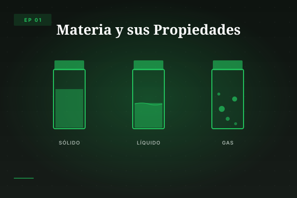
¿De qué está hecho todo? Masa, volumen, estados de agregación y propiedades intensivas y extensivas.
Química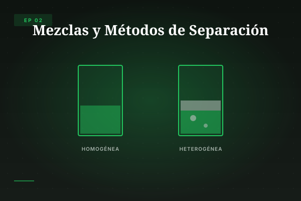
Homogéneas y heterogéneas. Filtración, decantación, tamizado, imantación y destilación.
Química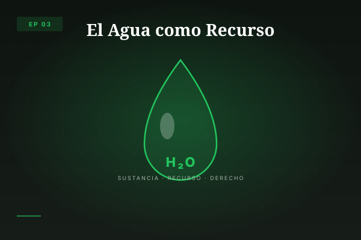
Propiedades del agua, ciclo hidrológico, potabilización y contaminación del agua.
Química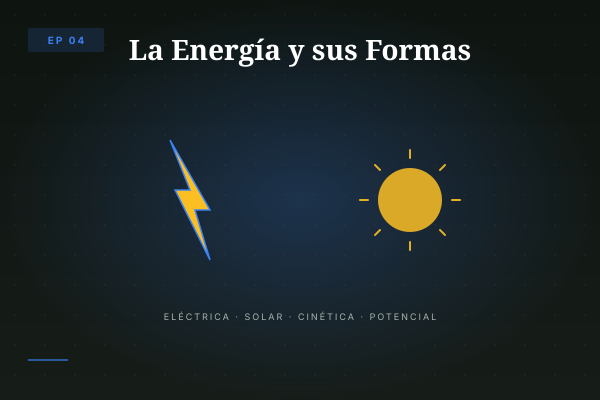
Tipos de energía, transformaciones y la ley de conservación. Energías renovables y no renovables.
Física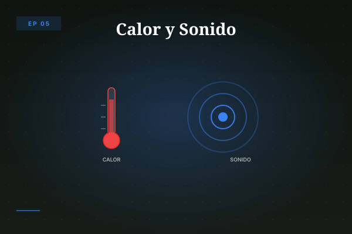
Diferencia entre calor y temperatura. Propagación del calor y ondas sonoras. Luz y materiales.
Física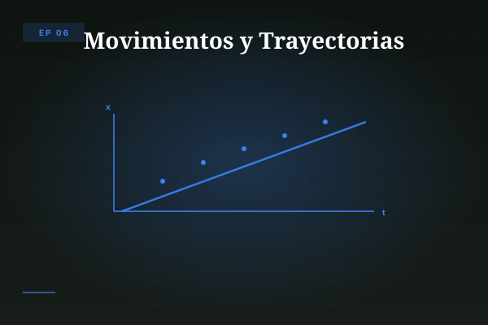
Posición, tiempo, velocidad y aceleración. Gráficos de movimiento MRU. Trayectoria y desplazamiento.
Física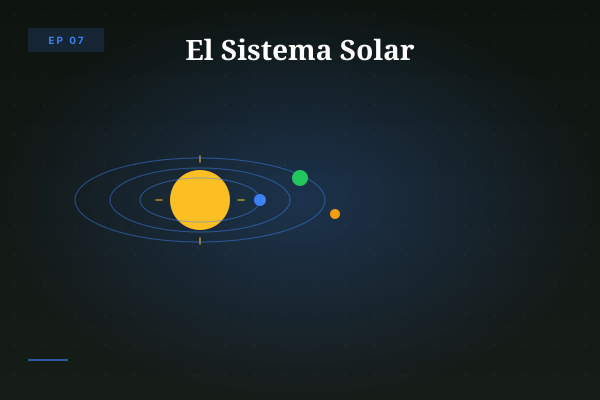
Sol, planetas, movimientos de rotación y traslación. El sistema Tierra-Luna y el proyecto MAPI.
Proyecto MAPI · Física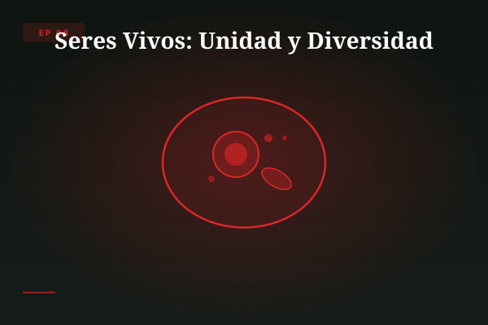
Características de la vida. Funciones vitales: nutrición, relación y reproducción. Clasificación.
Biología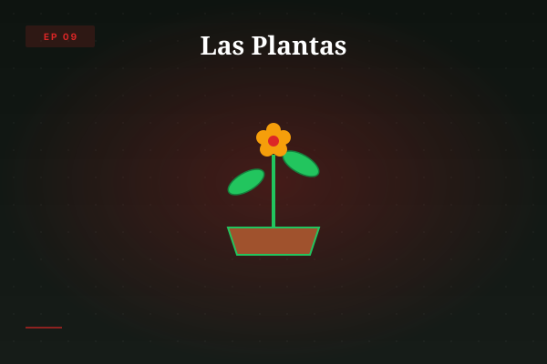
Fotosíntesis, germinación y estructuras vegetales. Raíz, tallo, hojas, flores y frutos.
Biología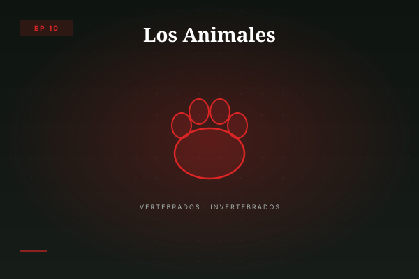
Tipos de alimentación y adaptaciones. Animales del conurbano bonaerense. Vertebrados e invertebrados.
Biología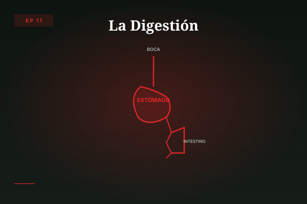
El recorrido del alimento. Boca, estómago, intestinos, hígado y páncreas. Enzimas digestivas.
Biología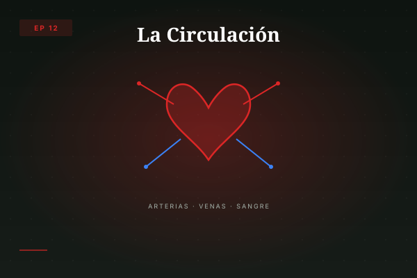
Corazón, arterias, venas y sangre. Circulación pulmonar y sistémica. Cómo viajan O₂ y nutrientes.
Biología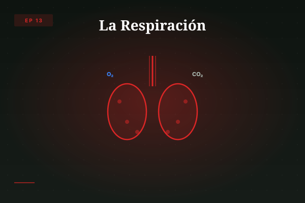
Desde las fosas nasales hasta los alvéolos. Intercambio gaseoso y mecánica respiratoria.
Biología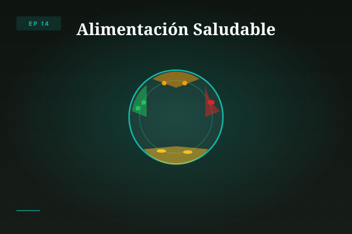
Nutrientes, vitaminas y minerales. El plato ideal. Alimentos ultraprocesados y ESI.
ESI · Biología
Los 14 episodios están disponibles con audios de 3 minutos en podcast/audio/. Voz: prof. Javier Pereyra. Hacé clic en play para escuchar.